Chapitre 3 : Les structures conditionnelles
Dans ce chapitre, je vais vous parler des structures conditionnelles, qui vont vous permettre de faire des tests et d'aller plus loin dans la programmation.Les conditions permettent d'exécuter une ou plusieurs instructions dans un cas, d'autres instructions dans un autre cas.Vous finirez ce chapitre en créant votre premier « vrai » programme : même si vous ne pensez pas encore pouvoir faire quelque chose de très consistant, à la fin de ce chapitre vous aurez assez de matière pour coder un petit programme dans un but très précis.
-
Forme minimale en if
Les conditions sont un concept essentiel en programmation (oui oui, je me répète à force mais il faut avouer que des concepts essentiels, on n'a pas fini d'en voir). Elles vont vous permettre de faire une action précise si, par exemple, une variable est positive, une autre action si cette variable est négative, ou une troisième action si la variable est nulle. Comme un bon exemple vaut mieux que plusieurs lignes d'explications, voici un exemple clair d'une condition prise sous sa forme la plus simple.
Cela étant posé, revenons à nos conditions :
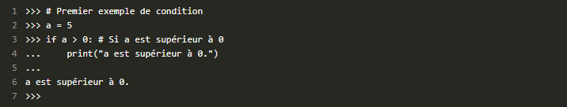Détaillons ce code, ligne par ligne :
- La première ligne est un commentaire décrivant qu'il s'agit du premier test de condition. Elle est ignorée par l'interpréteur et sert juste à vous renseigner sur le code qui va suivre.
- Cette ligne, vous devriez la comprendre sans aucune aide. On se contente d'affecter la valeur 5 à la variablea.
-
Ici se trouve notre test conditionnel. Il se compose, dans l'ordre :
- du mot clé if qui signifie « si » en anglais ;
- de la condition proprement dite,a > 0, qu'il est facile de lire (une liste des opérateurs autorisés pour la comparaison sera présentée plus bas);
- du signe deux points, « : », qui termine la condition et est indispensable : Python affichera une erreur de syntaxe si vous l'omettez.
- Ici se trouve l'instruction à exécuter dans le cas oùaest supérieur à0. Après que vous ayez appuyé sur Entrée à la fin de la ligne précédente, l'interpréteur vous présente la série de trois points qui signifie qu'il attend la saisie du bloc d'instructions concerné avant de l'interpréter. Cette instruction (et les autres instructions à exécuter s'il y en a) est indentée, c'est-à-dire décalée vers la droite. Des explications supplémentaires seront données un peu plus bas sur les indentations.
- L'interpréteur vous affiche à nouveau la série de trois points et vous pouvez en profiter pour saisir une nouvelle instruction dans ce bloc d'instructions. Ce n'est pas le cas pour l'instant. Vous appuyez donc sur Entrée sans avoir rien écrit et l'interpréteur vous affiche le message « a est supérieur à 0 », ce qui est assez logique vu queaest effectivement supérieur à0.
Il y a deux notions importantes sur lesquelles je dois à présent revenir, elles sont complémentaires ne vous en faites pas.La première est celle de bloc d'instructions. On entend par bloc d'instructions une série d'instructions qui s'exécutent dans un cas précis (par condition, comme on vient de le voir, par répétition, comme on le verra plus tard…). Ici, notre bloc n'est constitué que d'une seule instruction (la ligne 4 qui fait appel àprint). Mais rien ne vous empêche de mettre plusieurs instructions dans ce bloc.
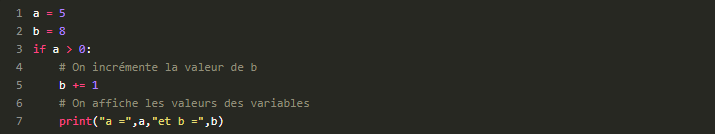La seconde notion importante est celle d'indentation. On entend par indentation un certain décalage vers la droite, obtenu par un (ou plusieurs) espaces ou tabulations.Les indentations sont essentielles pour Python. Il ne s'agit pas, comme dans d'autres langages tels que le C++ ou le Java, d'un confort de lecture mais bien d'un moyen pour l'interpréteur de savoir où se trouvent le début et la fin d'un bloc.
-
Forme complète (if,elifetelse)
Les limites de la condition simple enif
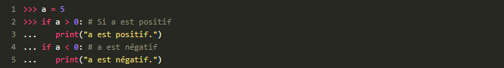
La première forme de condition que l'on vient de voir est pratique mais assez incomplète.Considérons, par exemple, une variableade type entier. On souhaite faire une action si cette variable est positive et une action différente si elle est négative. Il est possible d'obtenir ce résultat avec la forme simple d'une condition :Amusez-vous à changer la valeur deaet exécutez à chaque fois les conditions ; vous obtiendrez des messages différents, sauf siaest égal à 0. En effet, aucune action n'a été prévue si a vaut 0.Cette méthode n'est pas optimale, tout d'abord parce qu'elle nous oblige à écrire deux conditions séparées pour tester une même variable. De plus, et même si c'est dur à concevoir par cet exemple, dans le cas où la variable remplirait les deux conditions (ici c'est impossible bien entendu), les deux portions de code s'exécuteraient.La conditionifest donc bien pratique mais insuffisante.
L'instruction else:
Le mot-clé else, qui signifie « sinon » en anglais, permet de définir une première forme de complément à notre instructionif.
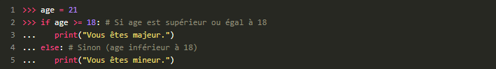
L'exemple de tout à l'heure pourrait donc se présenter comme suit, avec l'utilisation deelse:
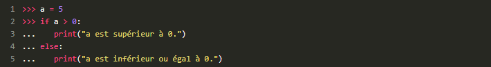
L'instruction elseif:
Le mot cléelifest une contraction de « else if », que l'on peut traduire très littéralement par « sinon si ». Dans l'exemple que nous venons juste de voir, l'idéal serait d'écrire :siaest strictement supérieur à0, on dit qu'il est positif ;sinon siaest strictement inférieur à0, on dit qu'il est négatif ;sinon, (ane peut qu'être égal à0), on dit alors queaest nul.Traduit en langage Python, cela donne :
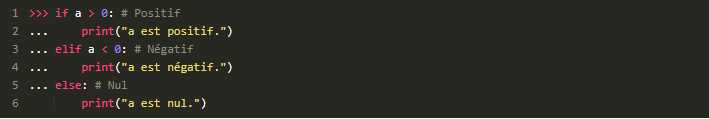
De même que leelse, leelifest sur le même niveau d'indentation que leifinitial. Il se termine aussi par deux points. Cependant, entre leelifet les deux points se trouve une nouvelle condition. Linéairement, le schéma d'exécution se traduit comme suit :
- On regarde siaest strictement supérieur à0. Si c'est le cas, on affiche « a est positif » et on s'arrête là.
- Sinon, on regarde siaest strictement inférieur à0. Si c'est le cas, on affiche « a est négatif » et on s'arrête.
- Sinon, on affiche « a est nul ».
-
De nouveaux opérateurs
Les opérateurs de comparaison
Les conditions doivent nécessairement introduire de nouveaux opérateurs, dits opérateurs de comparaison. Je vais les présenter très brièvement, vous laissant l'initiative de faire des tests car ils ne sont réellement pas difficiles à comprendre

Prédicats et booléensAvant d'aller plus loin, sachez que les conditions qui se trouvent, par exemple, entreifet les deux points sont appelés des prédicats. Vous pouvez tester ces prédicats directement dans l'interpréteur pour comprendre les explications qui vont suivre.
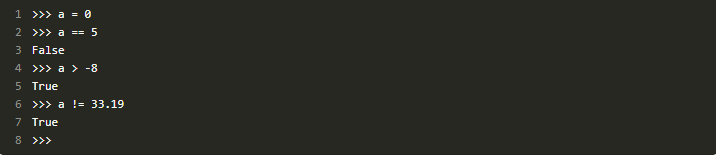
L'interpréteur renvoie tantôtTrue(c'est-à-dire « vrai »), tantôtFalse(c'est-à-dire « faux »).TrueetFalsesont les deux valeurs possibles d'un type que nous n'avons pas vu jusqu'ici : le type booléen (bool).
Les mots-clésand,oretnot
Il arrive souvent que nos conditions doivent tester plusieurs prédicats, par exemple quand l'on cherche à vérifier si une variable quelconque, de type entier, se trouve dans un intervalle précis (c'est-à-dire comprise entre deux nombres). Avec nos méthodes actuelles, le plus simple serait d'écrire :
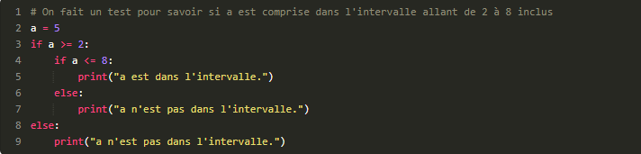
Cela marche mais c'est assez lourd, d'autant que, pour être sûr qu'un message soit affiché à chaque fois, il faut fermer chacune des deux conditions à l'aide d'unelse(la seconde étant imbriquée dans la première). Si vous avez du mal à comprendre cet exemple, prenez le temps de le décortiquer, ligne par ligne, il n'y a rien de compliqué.Il existe cependant le mot cléand(qui signifie « et » en anglais) qui va nous rendre ici un fier service. En effet, on cherche à tester à la fois siaest supérieur ou égal à 2 et inférieur ou égal à 8. On peut donc réduire ainsi les conditions imbriquées :
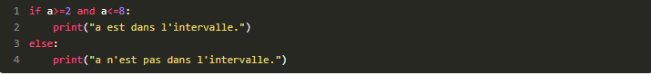
Simple et bien plus compréhensible, avouez-le.Sur le même mode, il existe le mot cléorqui signifie cette fois « ou ». Nous allons prendre le même exemple, sauf que nous allons évaluer notre condition différemment.Nous allons chercher à savoir sian'est pas dans l'intervalle. La variable ne se trouve pas dans l'intervalle si elle est inférieure à 2 ou supérieure à 8. Voici donc le code :
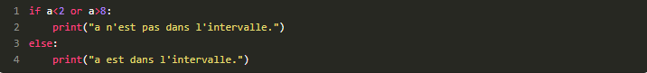
Enfin, il existe le mot clénotqui « inverse » un prédicat. Le prédicatnot a==5équivaut donc àa!=5.notrend la syntaxe plus claire. Pour cet exemple, j'ajoute à la liste un nouveau mot clé,is, qui teste l'égalité non pas des valeurs de deux variables, mais de leurs références. Je ne vais pas rentrer dans le détail de ce mécanisme avant longtemps. Il vous suffit de savoir que pour les entiers, les flottants et les booléens, c'est strictement la même chose. Mais pour tester une égalité entre variables dont le type est plus complexe, préférez l'opérateur « == ». Revenons à cette démonstration :
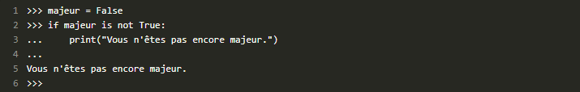
Si vous parlez un minimum l'anglais, ce prédicat est limpide et d'une simplicité sans égale.Vous pouvez tester des prédicats plus complexes de la même façon que les précédents, en les saisissant directement, sans leifni les deux points, dans l'interpréteur de commandes. Vous pouvez utiliser les parenthèses ouvrantes et fermantes pour encadrer des prédicats et les comparer suivant des priorités bien précises (nous verrons ce point plus loin, si vous n'en comprenez pas l'utilité).